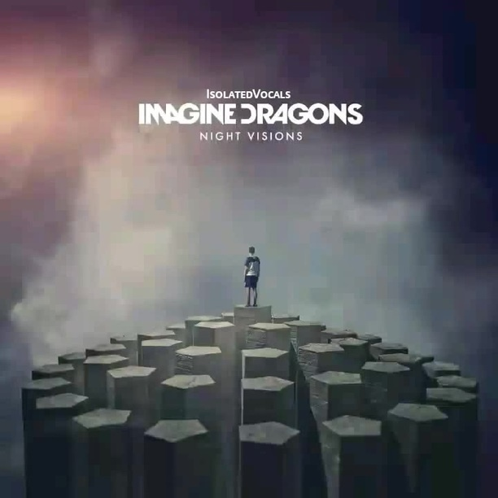
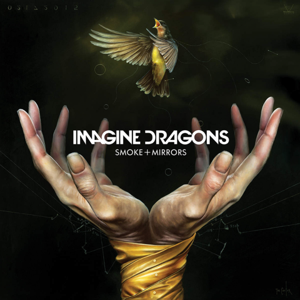
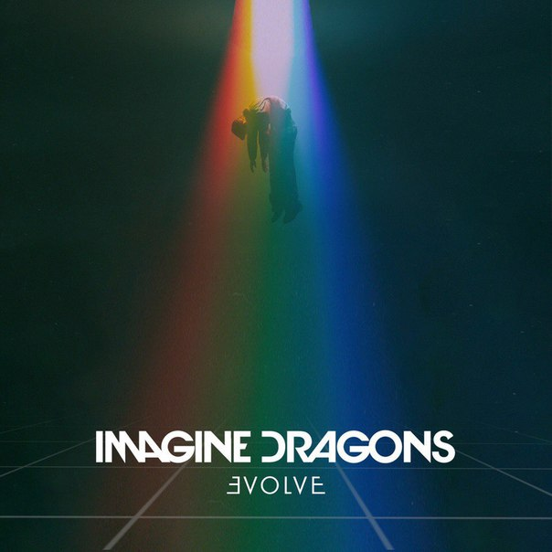
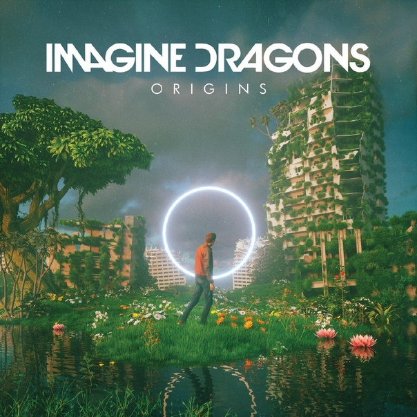

4 сентября 2012 года вышел первый полноценный альбом группы — Night Visions. Пластинка долгое время была в середине списка Billboard-200, лишь к началу 2013 года работа обрела популярность. В частности, хит «Radioactive» был в аутсайдерах списка на момент своего выхода (март 2012 года), однако к апрелю 2013 он достиг 7 места в Billboard Hot 100, 1 места в Billboard Alternative Songs и Billboard Rock Songs. Сингл вошёл в топ-3 самых продаваемых песен по итогам 2013 года.
В сентябре 2014 года группа выпустила сингл «I Bet My Life», а в ноябре сняла на него видеоклип. В декабре вышел второй сингл — «Gold». Вскоре состоялся анонс альбома, который был выпущен 17 февраля 2015 года. Он был назван «Smoke + Mirrors». В поддержку альбома состоялся мировой тур Smoke and Mirrors World Tour, в котором группа посетила Россию.
8 мая 2017 года группа анонсировала выход нового альбома. Релиз альбома Evolve (название стилизовано как ƎVOLVE) состоялся 23 июня 2017 года. Хиты «Believer» и «Thunder» сравнительно быстро достигли миллиарда просмотров на сервисе YouTube. Песня «Believer» Imagine Dragons одержала победу в номинации «Лучшая рок/альтернатива песня» на церемонии «Teen Choice Awards», которая прошла 14 августа 2017 года.
3 октября 2018 года группа анонсировала выход своего четвёртого студийного альбома «Origins», релиз которого состоялся 9 ноября. «Zero» и «Natural» стали ведущими синглами альбома, в то время как «Born to Be Yours» была представлена в международном подарочном издании альбома. Сама группа охарактеризовала этот альбом как сестринский к их предыдущему альбому Evolve.
